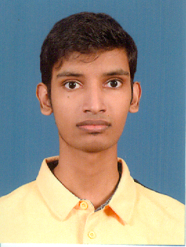

Contact
Phone: +940758237888
Email: svishan201@gmail.com
Address: No.39, Nagahawatte Avenue,
Ambalanwatte, Galle
Skills
- Computer Networking
- Web Developing
- MS Office
- English & Sinhala Typing
- Printing & Scanning
Personal
DOB: 18 Feb 1997
Gender: Male
Nationality: Sinhalese
Status: Single
Vishan Senanayake
Computer Network Technician
About Me
I am Vishan Raveendra Senanayake. I have one year training experience in office work. I have computer networking skills, English and Sinhala typing, printing and scanning documents skills.
Work Experience
- Computer Network Technician – Gallfourgravets Divisional Secretariat, Galle (Jan 2023 – Jul 2023)
- Computer Network Technician – Dakshinapaya Chief Ministry, Labuduwa (May 2022 – Nov 2022)
Professional Qualifications
Computer Network Technician (2022) – College of Technology, Galle
- Plan & lay small scale networks
- Fix and configure network hardware/software
- Install & configure applications
- Maintain & troubleshoot networks
- HTML, CSS coding
Educational Qualifications
- Certificate: Computer literacy (MS Word, Powerpoint, Excel, Access
- Certificate: Computer Networking
- Diploma: ICT(Information Communication Technology)
References
Rasika Janakie – IT Assistant, Gallfourgravets Secretariat
Phone: 0712902336 | Email: janakie16@gmail.com
Dinesha Dodampegamage – Administrative Officer, Gallfourgravets, Galle
Phone: 0914944823